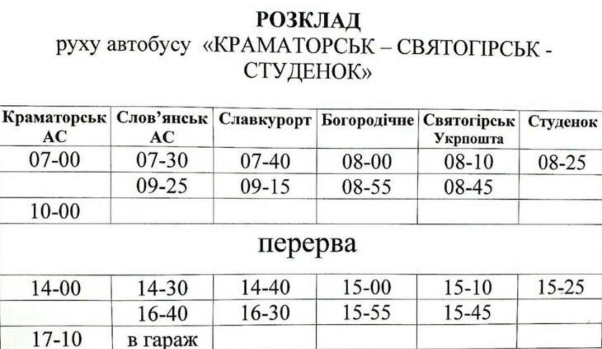
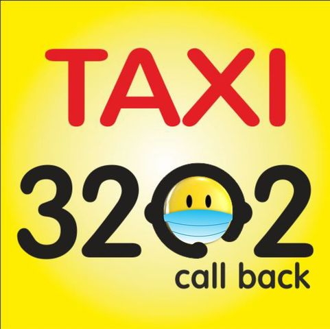

Святогорск- донецкая швейцария!

Стоимость проезда Краматорск-Святогорск 150 грн.
Телефон для справок: (050) 273-83-27


Стоимость проезда Краматорск-Святогорск 150 грн.
Телефон для справок: (050) 273-83-27
А так же возможно воспользоватся службами ТАКСИ
Служба такси "Своё такси 905", короткий номер "905"
Служба заказа такси 3202, работает только на межгород, короткий номер "3202"
 Через ЖД вокзал ходит ПОЕЗД Изюм — Лиман, расписание следующее
№6901 Изюм– 5:00 Святогорск — 5:50 Лиман – 7:18
№6902 Лиман – 7:35 Святогорск – 9:01 Изюм – 9:53
№6903 Изюм – 13:00 Святогорск — 13:50 Лиман – 15:18
№6904 Лиман – 15:40 Святогорск – 17:06 Изюм – 17:58
В расписании возможны измеения, уточняйте!
№6901 Изюм– 5:00 Святогорск — 5:50 Лиман – 7:18
№6902 Лиман – 7:35 Святогорск – 9:01 Изюм – 9:53
№6903 Изюм – 13:00 Святогорск — 13:50 Лиман – 15:18
№6904 Лиман – 15:40 Святогорск – 17:06 Изюм – 17:58
В расписании возможны измеения, уточняйте!
Так сейчас выглядит железнодорожная станция Святогорск
Так она выглядила раньше